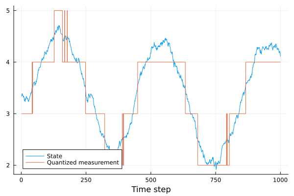
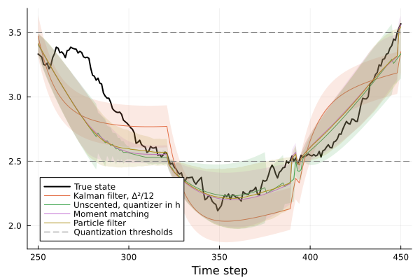
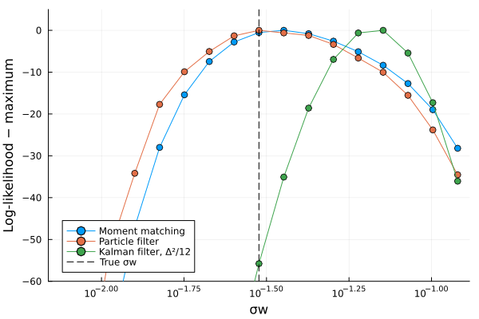

Quantized measurements
Many sensors deliver their measurements with a limited resolution: a thermometer that reports whole degrees, an encoder that counts pulses, or a signal that is stored with few bits. In general, the quantizer acts on the output of a measurement function $h(x, u, p, t)$ that may be nonlinear, as everywhere else in this package. To keep the exposition simple, this tutorial considers a linear measurement function $h(x) = C x$, for which the posterior of a Gaussian prior and one quantized measurement is available in closed form; the QuantizedMeasurementModel used below also accepts nonlinear measurement functions. A sensor with resolution $Δ$ then reports
\[y_k = Δ \operatorname{round}\big((C x_k + v_k)/Δ\big), \quad v_k \sim N(0, σ_v^2),\]
i.e., the measurement does not determine the output $C x_k + v_k$ but only the band $[y_k - Δ/2, y_k + Δ/2]$ in which it lies. The likelihood of a measurement is thus the probability of this band, which is not Gaussian.
If the output varies over several quantization levels between samples, or if the noise $v_k$ is large compared to $Δ$, the quantization error is approximately uniformly distributed, independent between samples, and has variance $Δ^2/12$. A Kalman filter with this variance added to the measurement noise then works well, see the section on quantization in Missing data and outliers. This tutorial treats the case where this approximation fails: the uncertainty of the estimated output is smaller than $Δ$, and the quantization error is strongly correlated in time. We compare the following estimators on a simple system:
- a Kalman filter with the quantization error modeled as white noise of variance $Δ^2/12$,
- a Kalman filter whose correction step uses the unscented transform with the quantizer in the measurement function,
- an assumed-density filter that computes the exact posterior of a Gaussian prior and one quantized measurement and approximates it by a Gaussian (moment matching), implemented by
QuantizedMeasurementModel, - a particle filter with the exact likelihood of the quantized measurement.
The system
The state $x_k$ follows a first-order system with a known input $u_k$ that moves the state across several quantization levels, and the measurement is rounded to whole numbers. The process noise is small compared to the quantization step.
using LowLevelParticleFilters, LinearAlgebra, StaticArrays, Plots, Random, Statistics, Printf
using LowLevelParticleFilters: SimpleMvNormal
Random.seed!(0)
a = 0.98 # Pole of the system
Δ = 1.0 # Quantization step
σw = 0.03 # Standard deviation of the process noise
σv = 0.01 # Standard deviation of the measurement noise before quantization
T = 1000
A = SA[a;;]
B = SA[1-a;;]
C = SA[1.0;;]
R1 = SA[σw^2;;]
d0 = SimpleMvNormal(SA[3.2], SA[σw^2/(1-a^2);;]) # Stationary distribution about the initial mean
quantize(z) = Δ .* round.(z ./ Δ)
u = [SA[3.2 + 1.5sin(2π*k/400)] for k in 1:T]
x = [d0.μ + sqrt(d0.Σ[1])*randn(SVector{1})]
for k in 1:T-1
push!(x, A*x[k] + B*u[k] + σw*randn(SVector{1}))
end
y = [quantize(C*xk + σv*randn(SVector{1})) for xk in x]
xtrue = getindex.(x, 1)
plot(xtrue, label="State", xlabel="Time step")
plot!(getindex.(y, 1), label="Quantized measurement", seriestype=:steppost)
To compare the estimators, we compute the root-mean-square error of the filtered estimate and the fraction of time steps at which the true state lies in the interval of ±1.96 standard deviations about the estimate, which should be close to 0.95 for a consistent estimator.
function evaluate(xh, σ)
e = xtrue .- xh
(; rmse = sqrt(mean(abs2, e)), coverage = mean(abs.(e) .<= 1.96 .* σ))
endKalman filter with the quantization error as white noise
The Kalman filter treats the quantization error as additional white measurement noise with variance $Δ^2/12$:
kf = KalmanFilter(A, B, C, 0, R1, SA[σv^2 + Δ^2/12;;], d0)
sol = forward_trajectory(kf, u, y)
xh_kf = getindex.(sol.xt, 1)
σ_kf = sqrt.(getindex.(sol.Rt, 1))
evaluate(xh_kf, σ_kf)(rmse = 0.20626395587886706, coverage = 0.471)Between two changes of the quantized value, the filter receives the same measurement at every time step and treats the errors of these measurements as independent. Its estimate is drawn towards the quantized value, and its covariance decreases as if each measurement carried new information, which makes the filter overconfident.
Unscented transform with the quantizer in the measurement function
A UKFMeasurementModel with augmented measurement noise (the third type parameter AUGM = true) accepts a measurement function h(x, u, p, t, e) in which the measurement noise e enters before a nonlinearity, here the quantizer. Since the dynamics are linear, we use the prediction step of a KalmanFilter, which is exact, and the unscented transform only in the correction step, by passing the measurement model to correct! (see Measurement models):
h(x, u, p, t, e) = quantize(C*x + e)
mm_ut = UKFMeasurementModel{Float64, false, true}(h, SA[σv^2;;]; nx=1, ny=1)
kf_ut = KalmanFilter(A, B, C, 0, R1, SA[σv^2;;], d0)The sigma points sample the quantizer, a piecewise constant function, at a few points. If all sigma points fall into the same band, the predicted measurement has zero variance, and the correction step either fails because the innovation covariance is singular, or leaves the estimate unchanged. If one sigma point falls into a neighboring band, the predicted measurement covariance is determined by the weight of that single point, and the correction may produce a covariance that is not positive definite. In the loop below, a failed correction is undone and counted, and so is a correction with a vanishing innovation variance:
function ut_trajectory(kf, mm, u, y)
xh = zeros(length(y)); σ = zeros(length(y))
nfailed = 0; nvanishing = 0; ll = 0.0
for k in eachindex(y)
x0, R0 = kf.x, kf.R
try
res = correct!(kf, mm, u[k], y[k])
res.S[1] < 1e-10 && (nvanishing += 1)
kf.R[1] > 0 || error("Covariance not positive definite")
ll += res.ll
catch
kf.x, kf.R = x0, R0
nfailed += 1
end
xh[k], σ[k] = kf.x[1], sqrt(kf.R[1])
predict!(kf, u[k])
end
xh, σ, nfailed, nvanishing, ll
end
xh_ukf, σ_ukf, nfailed, nvanishing, ll_ukf = ut_trajectory(kf_ut, mm_ut, u, y)
(; nfailed, nvanishing, ll_ukf, evaluate(xh_ukf, σ_ukf)...)(nfailed = 644, nvanishing = 232, ll_ukf = -1.0141204801825833e31, rmse = 0.12654330822760435, coverage = 0.88)Most corrections fail or carry no information. The filter therefore uses the measurements essentially only when the quantized value changes, and ignores the information that the output remains in the band of the measured value at the other time steps. The log-likelihood ll_ukf accumulated over the successful corrections is dominated by the corrections with a nearly vanishing innovation variance and is meaningless; it cannot be used for parameter estimation. An UnscentedKalmanFilter with the same measurement function behaves identically, and an ExtendedKalmanFilter or IteratedExtendedKalmanFilter with the quantizer in the measurement function never corrects the estimate, since the Jacobian of the quantizer is zero almost everywhere.
Assumed-density filter (moment matching)
For a linear measurement, the exact posterior of a Gaussian prior and one quantized measurement is available in closed form. With the prior $x \sim N(\hat x, P)$, the output $z = c^T x + v$ before quantization is Gaussian, $z \sim N(μ, S)$ with $μ = c^T \hat x$ and $S = c^T P c + σ_v^2$. The measurement $y$ states that $z$ lies in the band $[y - Δ/2, y + Δ/2]$, so the posterior of $z$ is a normal distribution truncated to the band. With $α = (y - Δ/2 - μ)/\sqrt{S}$, $β = (y + Δ/2 - μ)/\sqrt{S}$, the standard normal density $φ$ and distribution function $Φ$, the probability of the band and the mean and variance of the truncated distribution are
\[\begin{aligned} Z &= Φ(β) - Φ(α), \\ E[z \mid y] &= μ + \sqrt{S}\, \frac{φ(α) - φ(β)}{Z}, \\ \operatorname{Var}[z \mid y] &= S \left(1 + \frac{α φ(α) - β φ(β)}{Z} - \left(\frac{φ(α) - φ(β)}{Z}\right)^2\right). \end{aligned}\]
Since $x$ and $z$ are jointly Gaussian, the conditional distribution of $x$ given $z$ is Gaussian with a mean linear in $z$, and the posterior mean and covariance of $x$ follow from those of $z$:
\[\begin{aligned} K &= P c / S, \\ \hat x^+ &= \hat x + K\big(E[z \mid y] - μ\big), \\ P^+ &= P - K \big(S - \operatorname{Var}[z \mid y]\big) K^T. \end{aligned}\]
The only approximation is that the posterior is replaced by the Gaussian with the same mean and covariance. The contribution of the measurement to the log-likelihood is $\log Z$.
This update is implemented by QuantizedMeasurementModel, which wraps a measurement model of the output before quantization, here a LinearMeasurementModel with the noise variance $σ_v^2$. A KalmanFilter accepts the measurement model in correct!(kf, qmm, u, y), but cannot hold it: the functions that run a filter over a data set, such as forward_trajectory and loglik, use the built-in linear measurement model of the Kalman filter. A filter that holds another measurement model is constructed as an ExtendedKalmanFilter (or UnscentedKalmanFilter). With the Jacobian of the linear dynamics given as the constant matrix A, the prediction step of the extended Kalman filter equals that of the Kalman filter. The filter is then used with forward_trajectory, loglik and smooth like any other filter:
qmm = QuantizedMeasurementModel(LinearMeasurementModel(C, 0, SA[σv^2;;]), Δ)
qkf = ExtendedKalmanFilter((x, u, p, t) -> A*x + B*u, qmm, R1, d0; nu=1, Ajac = (x, u, p, t) -> A)
solq = forward_trajectory(qkf, u, y)
xh_adf = getindex.(solq.xt, 1)
σ_adf = sqrt.(getindex.(solq.Rt, 1))
evaluate(xh_adf, σ_adf)(rmse = 0.12204620543832409, coverage = 0.9)The measurement model may also be passed to correct! of any Kalman-type filter, e.g., correct!(kf, qmm, u[k], y[k]). Further options of QuantizedMeasurementModel:
- A nonlinear measurement function is handled by wrapping an
EKFMeasurementModelor aUKFMeasurementModel(with additive or augmented noise). The predicted moments of the output before quantization are then computed by linearization or by the unscented transform, and the band is treated by the update above. The quantizer thus never enters a Jacobian or a set of sigma points. - Several outputs are processed one at a time, with the moments of the remaining outputs recomputed after each update. This requires the measurement noise of the outputs to be independent, i.e., a diagonal covariance matrix.
- The step
Δmay be a vector with one step per output. An output with step zero is not quantized and receives the standard Kalman update, so that quantized and unquantized sensors may be combined in one model. - The keyword argument
bandspecifies the interval of the output that corresponds to a measurement, e.g.,band = (y, Δ) -> (y, y + Δ)for a quantizer that truncates rather than rounds, or infinite bounds for a sensor that saturates.
Particle filter
A particle filter represents the posterior by samples, and the likelihood of the quantized measurement, the probability of its band, enters through the measurement likelihood of an AdvancedParticleFilter. The logarithm of the probability is computed by the function that QuantizedMeasurementModel uses, which is accurate also far in the tails of the distribution:
dynamics(x, u, p, t, noise=false) = A*x + B*u + noise*σw*randn(SVector{1})
measurement(x, u, p, t, noise=false) = quantize(C*x + noise*σv*randn(SVector{1}))
function measurement_likelihood(x, u, y, p, t)
z = C*x
sum(LowLevelParticleFilters.truncated_normal_moments((y[i] - Δ/2 - z[i])/σv, (y[i] + Δ/2 - z[i])/σv)[1] for i in eachindex(y))
end
pf = AdvancedParticleFilter(2000, dynamics, measurement, measurement_likelihood, SimpleMvNormal(R1), d0)
solpf = forward_trajectory(pf, u, y)
xs = getindex.(solpf.x, 1) # Particles × time steps
xh_pf = vec(sum(solpf.we .* xs, dims=1))
σ_pf = vec(sqrt.(sum(solpf.we .* (xs .- xh_pf') .^ 2, dims=1)))
evaluate(xh_pf, σ_pf)(rmse = 0.11908593193968522, coverage = 0.933)Comparison
for (name, xh, σ) in [("Kalman filter, Δ²/12", xh_kf, σ_kf), ("Unscented, quantizer in h", xh_ukf, σ_ukf),
("Moment matching", xh_adf, σ_adf), ("Particle filter", xh_pf, σ_pf)]
r = evaluate(xh, σ)
@printf("%-26s RMSE %.4f coverage of the 95 %% interval %.2f\n", name, r.rmse, r.coverage)
endKalman filter, Δ²/12 RMSE 0.2063 coverage of the 95 % interval 0.47
Unscented, quantizer in h RMSE 0.1265 coverage of the 95 % interval 0.88
Moment matching RMSE 0.1220 coverage of the 95 % interval 0.90
Particle filter RMSE 0.1191 coverage of the 95 % interval 0.93The moment-matching filter and the particle filter attain nearly the same error, with a coverage close to the nominal 0.95. The Kalman filter with the quantization noise has a larger error and is strongly overconfident: it is drawn towards the quantized value between the changes of the measurement. In this example, with small process noise, most of the information is contained in the changes of the quantized value, and the error of the filter with the unscented transform is only slightly larger than that of the moment-matching filter; it is, however, overconfident, and its likelihood cannot be used. The difference grows with the process noise, when the information that the output remains in its band becomes more important. The plot below shows the estimates in an interval in which the state crosses quantization thresholds.
inds = 250:450
plot(inds, xtrue[inds], label="True state", l=(:black, 2), xlabel="Time step", legend=:bottomleft)
for (name, xh, σ) in [("Kalman filter, Δ²/12", xh_kf, σ_kf), ("Unscented, quantizer in h", xh_ukf, σ_ukf),
("Moment matching", xh_adf, σ_adf), ("Particle filter", xh_pf, σ_pf)]
plot!(inds, xh[inds], ribbon=1.96σ[inds], fillalpha=0.15, label=name)
end
hline!([2.5, 3.5], l=(:dash, :gray), label="Quantization thresholds")
Parameter estimation
The log-likelihood of the moment-matching filter, the sum of $\log Z$ over the measurements, approximates the exact log-likelihood of the quantized data and can be used for maximum-likelihood estimation. Below, we compute the log-likelihood as a function of the standard deviation of the process noise $σ_w$ for the moment-matching filter, the particle filter and the Kalman filter with the quantization noise:
σws = σw .* exp2.(-2:0.25:2)
ll_adf_prof = map(σws) do σ
loglik(ExtendedKalmanFilter((x, u, p, t) -> A*x + B*u, qmm, SA[σ^2;;], d0; nu=1, Ajac = (x, u, p, t) -> A), u, y)
end
ll_kf_prof = map(σws) do σ
loglik(KalmanFilter(A, B, C, 0, SA[σ^2;;], SA[σv^2 + Δ^2/12;;], d0), u, y)
end
ll_pf_prof = map(σws) do σ
dyn(x, u, p, t, noise=false) = A*x + B*u + noise*σ*randn(SVector{1})
pfσ = AdvancedParticleFilter(2000, dyn, measurement, measurement_likelihood, SimpleMvNormal(SA[σ^2;;]), d0)
Random.seed!(1) # The same random numbers for every value of σ
loglik(pfσ, u, y)
end
plot(σws, [ll_adf_prof .- maximum(ll_adf_prof), ll_pf_prof .- maximum(ll_pf_prof), ll_kf_prof .- maximum(ll_kf_prof)],
label=["Moment matching" "Particle filter" "Kalman filter, Δ²/12"], xscale=:log10, m=:o,
xlabel="σw", ylabel="Log-likelihood − maximum", ylims=(-60, 5), legend=:bottomleft)
vline!([σw], l=(:dash, :black), label="True σw")
The maximum of the likelihood of the moment-matching filter is close to that of the particle filter and to the true value, while the Kalman filter with the quantization noise overestimates the process noise, since it explains the jumps of the quantized measurement at the thresholds by large state changes. The log-likelihood of the moment-matching filter is differentiable with ForwardDiff, and may thus be maximized by gradient-based optimizers as described in Maximum-likelihood and MAP estimation.
Sums of squared prediction errors, such as LowLevelParticleFilters.sse and the multi-step prediction errors, compare the quantized measurement with the predicted output before quantization as if their difference were Gaussian. If the output remains within one quantization band over many time steps, the rounding error is nearly constant over these steps, and the minimum of such a criterion is in general not located at the true parameters. For a filter with a QuantizedMeasurementModel, these functions therefore throw an error. Parameters are estimated with loglik, or with a Gauss-Newton method using LowLevelParticleFilters.prediction_errors! with loglik = true, which returns the residual $\sqrt{-\log P_i}$ for each quantized output, where $P_i$ is the predicted probability of the band of the measurement, such that the sum of squared residuals is the negative log-likelihood.
Discussion
- The moment-matching filter has the cost of a Kalman filter. Its approximation is accurate when each measurement is weakly informative compared to the prior, such that the posterior is close to Gaussian, which is the case for quantized measurements of a system whose state is observed over many time steps.
- In Monte Carlo simulations of the system above over a range of process- and measurement-noise levels, the root-mean-square error of the moment-matching filter was within 1 % of that of a particle filter with $10^5$ particles in every case, while that of the unscented transform with the quantizer in the measurement function was up to 74 % larger, and that of the Kalman filter with the quantization noise up to 96 % larger.
- In a study on a model of a geothermal borehole with a state dimension of 12 and two outputs quantized to whole degrees, the moment-matching filter attained the root-mean-square error of a particle filter with $10^5$ particles to within 1 %, and its maximum-likelihood estimates were unbiased. The Gaussian-sum filter of Cedeño et al. (2025), which approximates the indicator function of the band by a Gaussian mixture, was marginally closer to the posterior of the particle filter, at a computational cost about four orders of magnitude larger.
- For a nonlinear measurement function, the update is exact only up to the approximation of the predicted moments of the output before quantization by linearization or by the unscented transform, as for the corresponding filters without quantization.
- If $σ_v$ is large compared to $Δ$, or the output changes by several quantization levels between samples, the Kalman filter with the variance $Δ^2/12$ added to the measurement noise is adequate.